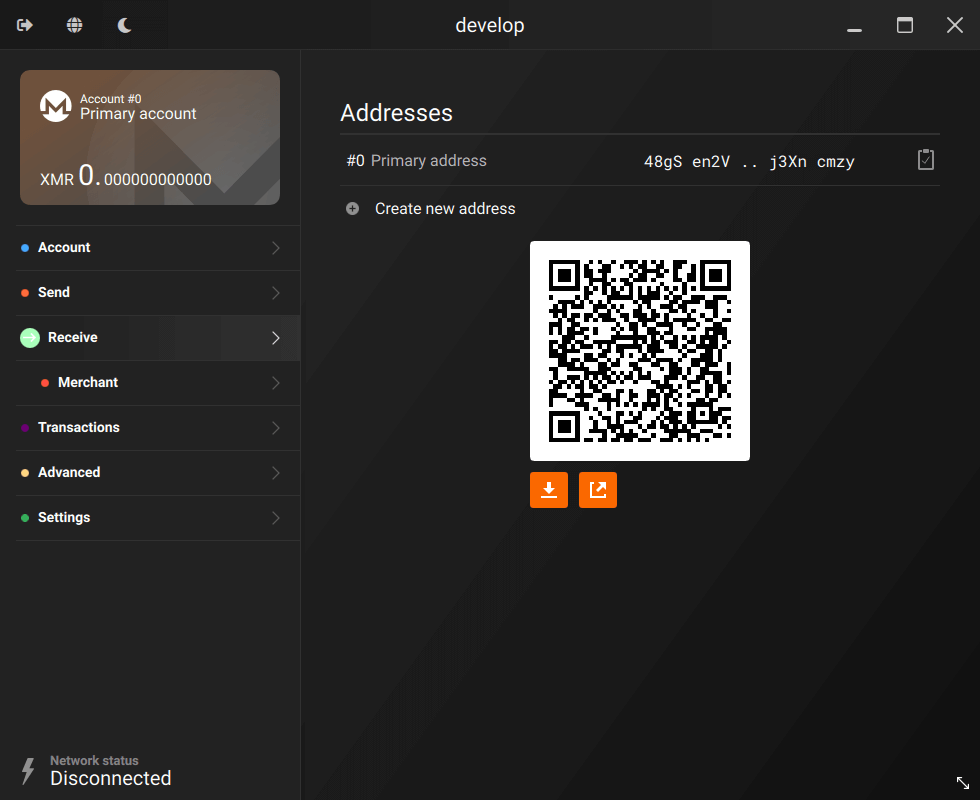
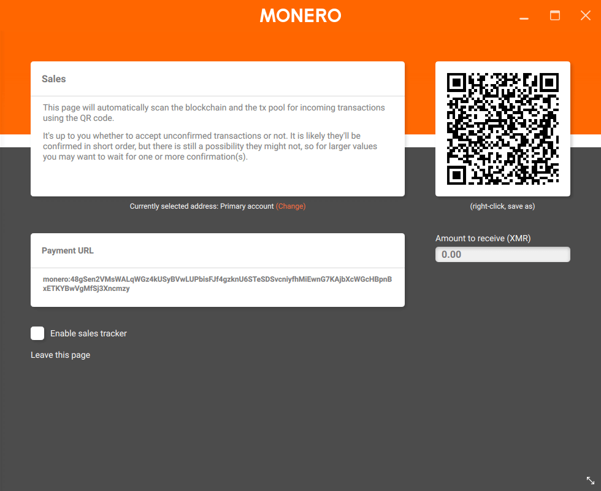
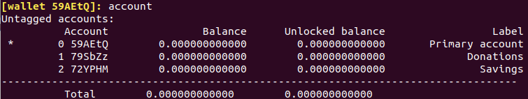
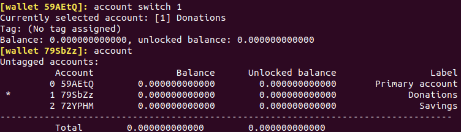

Accepting Monero
Index
Instructions for the GUI
Accepting a payment with the GUI is very easy. Doesn't matter if you are a merchant or an user, you will have two pages available: Receive and Merchants.
The receive page (shown below) is explained in every detail in the guide of the GUI.
To receive XMR you only need to provide the payer with an address where they can send funds to. Most of the time it's easier to just share a QR code and let the payer scan it, instead of copy-pasting the alphanumeric string. With the GUI every generated address come with its QR code. Make the person scan the QR code with the Monero wallet on their phone and receive your XMR in minutes. Remember you can generate as many addresses (subaddresses) as you want. This is useful if you want to keep funds separated for any reason.
Merchants will probably find more convenient to use the 'Merchant' page (screenshot below), which is explained in detail in the 'Merchant view' section of the guide linked above.
This is a POS-like page that merchant can easily use to set the amount of XMR to receive. If the 'Sale tracker' option is enabled, you will see the payments while they arrive in real time in your wallet, along with the number of confirmations.
These two pages give everybody the possibility to easily receive XMR following these steps:
- Go to the 'Receive' page and create/select the address where you want to receive your coins.
- Share the address composed by letters and numbers to the person you want to receive coins from. You probably prefer to use the more user friendly QR code.
- If you want to specify the amount to receive, go to the 'Merchant' page (after you selected in the 'Receive' page the account that will be used to receive XMR).
- Insert the amount to receive, then share with the payer the payment URL or the QR code. If you want to track the payment in real time, tick the 'enable sales tracker' option.
- Wait until the payment has arrived and has enough confirmations (The more confirmations, the safer the transaction is. You need at least 10 confirmations before you can spend the funds.).
Instructions for the CLI
When you create your wallet for the first time, an address will be automatically shown to you. That's your primary address. If you want, you can simply use that address to receive payments. You should be concerned about who knows about this address (since one address in different locations can be associated), but you do not need to worry about blockchain observers watching transactions to this address like with Bitcoin. A friend can send transactions to the same address without reduced privacy.
You can have much more control if you want to. Monero gives the possibility to create multiple accounts, each containing multiple subaddresses, useful if you want to control multiple accounts. For example, you may want to have an account for receiving donations and another one for your daily use. That will allow you to easily monitor incoming funds to your 'donations' account, without mixing it with your primary account.
To create an account, simply run this command:
account new [label text with white spaces allowed]
Now you have another account separated from your primary one. You can switch anytime between accounts.
As you can see from the picture above, every account has an index number that you can use to switch from one account to the other using the command `account switch [index]`. For example, using the picture above as reference, if you would like to switch to the 'Donations' account to monitor it, you can do so by giving your CLI this command `account switch 1`. Now you are sitting on your 'Donations' account and you can start using it right away.
Every account can host a virtually infinite amount of subaddresses. These work exactly like a normal address and you can create as many as you want and use them to receive XMR to the account they are linked to. To create a new subaddress for an account, use the command:
address new [label text with white spaces allowed]
Note that the instructions below are just the minimal necessary to create and use accounts/subaddresses. The CLI offer more capillary ways to handle accounts and the wallet in general. Use the command 'help' to list all the available options.
Instructions for merchants
If you are a business and you wish to programmatically receive transactions or use advanced features like multisignature, it's suggested to consult the developer guides. If you need support, the community will always be happy to help. Come chat on #monero, the chatroom is on Freenode, but also relayed on MatterMost and Matrix.
If you prefer to not directly deal with the wallets, you can use a third party payment system. Members of the Monero community have created a set of integrations for various platforms and languages. You can find more info on the GitHub organization.
If you are looking for other third party integration system, there is a list of payment gateways on the merchant page. Some of those offer nice features like the possibility to automatically convert part of your income in fiat money or to accept other cryptocurrencies along with Monero.